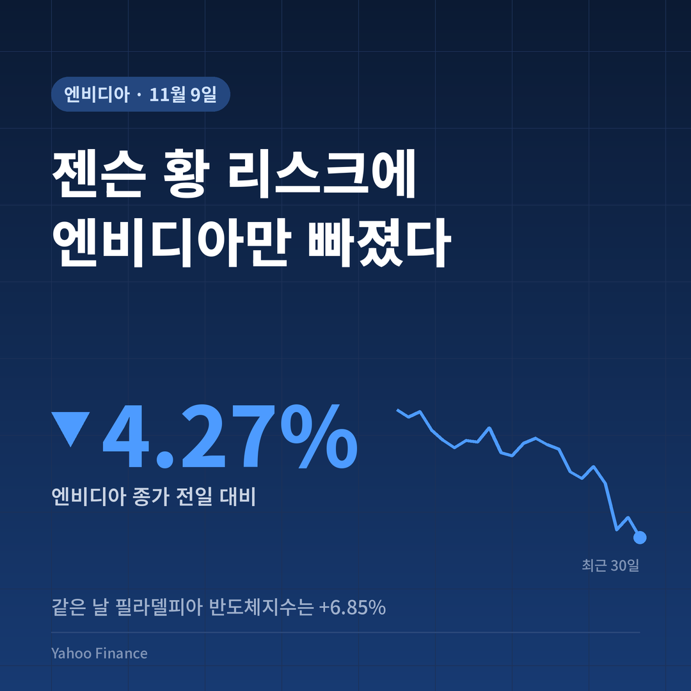
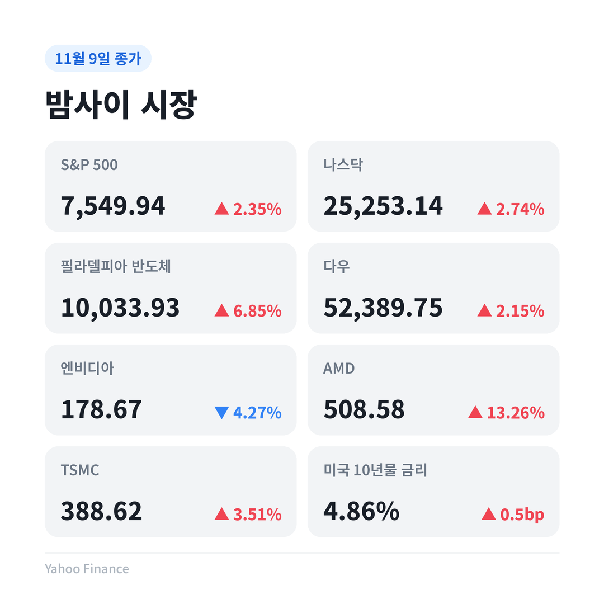
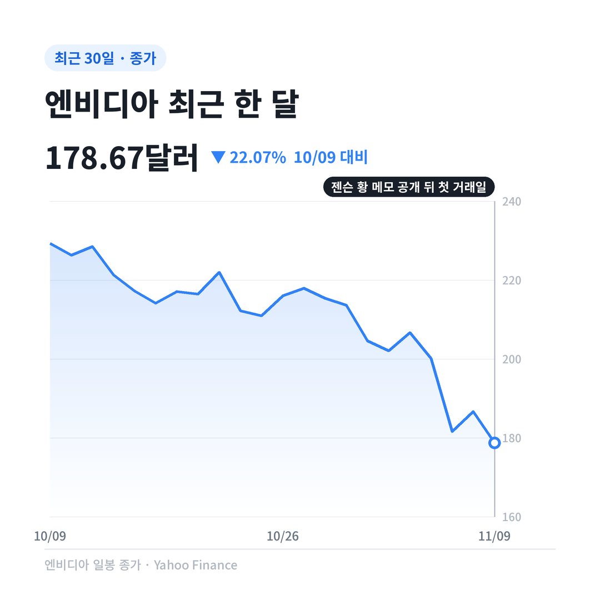
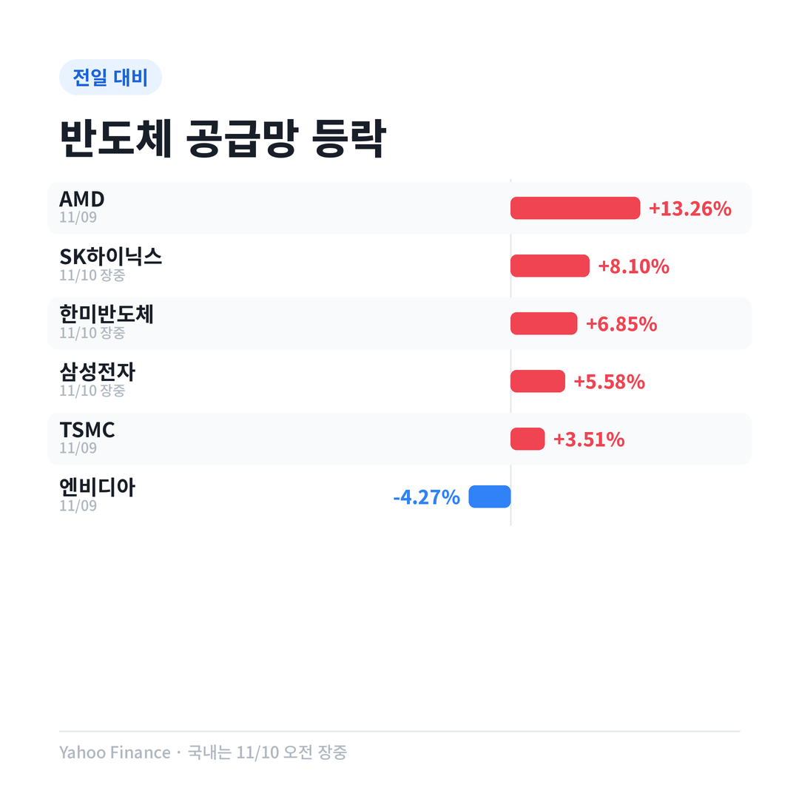

📷 사진 1 자리
메모 한 장에서 시작된 일
| 날짜(현지) | 내용 |
|---|---|
| 11월 8일(일) | 젠슨 황이 직원들에게 보낸 메모에서 혼외 관계를 인정 ([CNBC](https://www.cnbc.com/2026/11/09/nvidia-jensen-huang-chinese-spy-investigation.html)) |
| 이후 | 엔비디아 이사회 독립위원회가 조사를 맡기로 함 ([Yahoo Finance](https://finance.yahoo.com/markets/article/nvidias-jensen-huang-admits-to-affair-after-allegations-of-romance-with-chinese-spy-report-205122263.html)) |
| 11월 9일(월) | 엔비디아 주가 하락 마감 |
| 이후 | 트럼프 대통령이 FBI가 이 관계를 들여다보고 있다고 언급 ([Nikkei Asia](https://asia.nikkei.com/business/markets/nvidia-shares-drop-as-jensen-huang-affair-raises-china-spy-concerns)) |
일이 커진 건 사생활보다 상대방 때문이에요. 상대 여성은 메가스피드라는 회사의 전 임원으로 알려졌는데, 이 회사는 미국의 대중국 수출 규제를 피해 엔비디아 칩을 중국으로 넘겼다는 의심을 받아 왔어요.
어디까지가 사실일까
| 구분 | 내용 |
|---|---|
| ✅ 사실 | 젠슨 황 본인이 혼외 관계를 인정 |
| ✅ 사실 | 엔비디아 이사회 독립위원회가 조사 중 |
| ✅ 사실 | 9일 엔비디아 종가 178.67달러, 전일 대비 -4.27% |
| ⚠️ 의혹 | 상대 여성의 중국 정보기관 연계. 미 정보당국 판단을 전한 보도이고 확정된 사실이 아님 ([CBS News](https://www.cbsnews.com/news/nvidia-jensen-huang-stock-board-investigation-spy/)) |
| 🗣️ 회사 입장 | 메가스피드를 통한 칩 우회 의혹은 이미 조사해 근거가 없다고 확인, 정보기관 연계 보도도 반박 ([TweakTown](https://www.tweaktown.com/news/114387/nvidia-pushes-back-against-report-linking-ceo-jensen-huang-to-suspected-chinese-intelligence-asset/index.html)) |
이 글은 사생활보다 회사와 주가에 미치는 영향에 초점을 둬요.
같은 날 반도체지수는 6.85% 올랐다
9일 미국 증시는 오히려 크게 올랐어요.
📷 사진 2 자리
| 지표 | 9일 종가 | 전일 대비 |
|---|---|---|
| 엔비디아 | 178.67달러 | -4.27% |
| 필라델피아 반도체지수 | 10,033.93 | +6.85% |
| 나스닥 | 25,253.14 | +2.74% |
| S&P 500 | 7,549.94 | +2.35% |
| AMD | 508.58달러 | +13.26% |
| TSMC(미국 상장) | 388.62달러 | +3.51% |
장중에는 낙폭이 더 컸어요. 개장 직후 8% 가까이 빠졌다가 일부 회복했다는 보도가 있어요 ([The Globe and Mail](https://www.theglobeandmail.com/business/international-business/article-nvidia-stock-jensen-huang-affair-chinese-spy/)). 하루 동안 줄어든 시가총액은 종가 기준 258조원 수준으로 전해졌어요 ([연합뉴스](https://www.yna.co.kr/view/AKR20261110017900009)).
공포지수(VIX)는 19.92로 하루 새 22.31% 내려갔어요. 시장 전체의 불안은 오히려 줄었다는 뜻이에요.
같은 반도체인데 AMD는 13.26% 오르고 엔비디아는 빠졌어요. 시장이 이번 일을 AI 반도체 수요 문제가 아니라 엔비디아 경영진 한 사람의 문제로 읽었다는 신호예요.
📷 사진 3 자리
HBM 공급사는 반대로 움직였다
10일 국내 시장은 미국 반도체 반등을 따라 장 초반 강세였어요(오전 9시 30분 무렵 장중 기준, 종가 아님).
| 종목 | 장중 등락 |
|---|---|
| SK하이닉스 | +8.10% |
| 한미반도체 | +6.85% |
| 삼성전자 | +5.58% |
| 코스피 | +5.22% |
엔비디아에 HBM(고대역폭 메모리)을 공급하는 SK하이닉스와 삼성전자가 엔비디아와 반대로 움직인 셈이에요. 엔비디아 CEO 리스크가 아직 공급망 리스크로 번지지 않았다는 점이 국내 투자자에게는 핵심이에요.
📷 사진 4 자리
조사 결과에 따라 갈리는 세 갈래
| 시나리오 | 무엇을 보면 되나 | 예상되는 영향 |
|---|---|---|
| 젠슨 황 유임 | 이사회 조사 결과 발표 | 단기 불확실성 해소, 엔비디아 낙폭 회복 시도 |
| CEO 교체 | 이사회 발표, 후임 지명 | 엔비디아 변동성 확대. 뚜렷한 후계자가 없다는 점이 부담 ([CNBC](https://www.cnbc.com/2026/11/09/jensen-huang-affair-nvidia-succession.html)) |
| 의혹이 사실로 확인 | FBI·의회 움직임 | 회사 문제를 넘어 미·중 반도체 규제 강화로 번질 수 있음. 이때는 국내 반도체주도 영향권 |
월가 분석가 댄 아이브스는 조사 결과에 따라 해임 위험이 있다고 보면서도, 당장은 자리를 지킬 것으로 예상했어요 ([CNBC](https://www.cnbc.com/2026/11/09/nvidia-jensen-huang-chinese-spy-investigation.html)).
시기가 묘해요. 중간선거에서 민주당이 상·하원을 모두 가져가며 데이터센터 규제 논의가 커지는 와중에, AI 산업의 얼굴인 젠슨 황이 중국 관련 의혹에 휘말렸어요. 미국이 AI 속도를 늦추면 중국이 따라잡을 틈이 생긴다고 보는데, 이번 의혹은 오히려 규제 쪽 목소리에 힘을 실어 줄 수 있어 보여요.
✍️ 직접 보거나 들은 경험이 있으면 위 문단에 한두 줄 덧붙이세요 (이 안내 줄은 지우기)
반대로 볼 근거도 있어요. 9일 시장은 이번 일을 엔비디아 한 회사의 문제로 한정했고, 같은 날 AI 전력·데이터센터 관련주인 버티브(+9.63%)와 컨스텔레이션에너지(+10.46%)도 크게 올랐어요. AI 투자 흐름 자체가 흔들린다는 증거는 아직 없어요.
이번 주에 볼 것
이 글은 정보 제공 목적이며 투자 권유가 아닙니다. 투자 판단과 책임은 본인에게 있습니다.
시장 수치: Yahoo Finance 종가 기준(국내는 표시한 장중 시각 기준)



